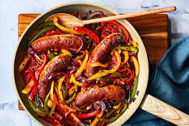

Sausage and Peppers

Description
Searing sweet Italian sausage in a dry skillet renders the fat, resulting in a deliciously crispy sausage. Tender bell peppers add a welcome vegetal sweetness to this one-pan dinner while they cook down in a blend of savory chicken broth and tangy vinegar perfect for sopping up with crusty bread
Ingredients
- 4 (6- to 7-ounce) sweet Italian pork sausages
- 3 medium bell peppers (mix of yellow, red, and green), sliced (about 5 loosely packed cups)
- 1 large red onion, halved lengthwise and thinly sliced crosswise (about 3 cups)
- 2 tablespoons tomato paste
- 3 large garlic cloves, thinly sliced (about 11/2 tablespoons)
- ½ teaspoon kosher salt
- ¼ teaspoon crushed red pepper
- 1 cup lower-sodium chicken broth
- 1 tablespoon red wine vinegar
Steps
- Preheat oven to 400°F. Prick Italian sausages all over using a knife. Place sausages in a cold large ovenproof skillet. Cook over medium-high, flipping occasionally, until browned on all sides, about 14 minutes. Transfer to a plate. Do not wipe skillet clean
- Add bell peppers and onion to skillet; cook over medium-high, stirring often, until softened, about 6 minutes. Add tomato paste, garlic, salt, and crushed red pepper; cook, stirring often, until vegetables are well coated in tomato paste and garlic is tender and aromatic, about 2 minutes. Stir in broth and vinegar. Bring to a boil over medium-high. Boil, stirring often, until liquid has almost completely reduced, about 6 minutes. Return sausages to skillet
- Transfer skillet to preheated oven, and roast until vegetables are tender and a thermometer inserted in thickest portion of sausages registers 160°F, about 15 minutes. Remove from oven; let stand until cool enough to handle, 3 to 5 minutes. Serve with crusty bread